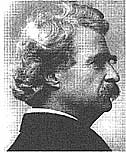
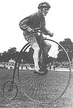

Last Laugh
Mark Twain on mounts, dismounts, and the joys of having an expert around..
I thought the matter over, and concluded I could do it. So I went down and bought a barrel of Pond's Extract and a bicycle. The Expert came home with me to instruct me. We chose the backyard, for the sake of privacy, and went to work.
Mine was not a full-grown bicycle, but only a colt-a 50 inch, with the pedals shortened up to 48-and skittish, like any other colt. The Expert explained the thing's points briefly, then got on its back and rode around a little, to show me how easy it was to do. He said that the dismounting was perhaps the hardest thing to learn, and so we would leave that to the last. But he was in error there. He found, to his surprise and joy, that all he needed to do was to get me on to the machine and stand out of the way; I could get off myself.
Although I was wholly inexperienced, I dismounted in the best time on record. He was on that side, shoving up the machine; we all came down with a crash, he at the bottom, I next, and the machine on top. We examined the machine, but it was not in the least injured. This was hardly believable. Yet the Expert assured me it was true; in fact, the examination proved it. I was partly to realize, then, how admirably these things are constructed. We applied some Pond's Extract and resumed. The Expert got on the other side to shove up this time, but I dismounted on that side; so the result was as before.
The machine was not hurt. We oiled ourselves up again and resumed. This time the Expert took up a sheltered position behind, but somehow or other we landed on him again.
He was full of surprised admiration; said it was abnormal. She was all right, not a scratch on her, not a timber started anywhere. I said it was wonderful, while we were greasing up, but he said that when I came to know these steel spiderwebs I would realize that nothing but dynamite could cripple them. Then he limped out to position, and we resumed once more. This time the Expert took up the position of shortstop, and got a man to shove up behind. We got up a handsome speed, and presently traversed a brick, and I went out over the top of the tiller and landed, head down, on the instructor's back, and saw the machine fluttering in the air between me and the sun. It was well it came down on us, for that broke the fall and it was not injured.
Five days later I got out and was carried down to the hospital, and found the Expert doing pretty fairly. In a few more days I was quite sound. I attribute this to my prudence in always dismounting on something soft. Some recommend a feather bed, but I think an Expert is better.
The Expert got out at last, and brought four assistants with him. It was a good idea. These four held the graceful cobweb upright while I climbed into the saddle; they formed in column and marched on either side of me while the Expert pushed behind; all hands assisted at the dismount.
The bicycle had what is called the "wabbles," and had them very badly. In order to keep my position, a good many things were required. For instance, if I found myself falling to the right, I put the tiller hard down the other way, by a quite natural impulse, and so violated a law and kept on going down. The law required the opposite thing-the big wheel must be turned in the direction in which you are falling. It is hard to believe this, when you are told it. And not merely hard to believe it, but impossible.
The steps of one's progress are distinctly marked. At the end of each lesson he knows he has acquired something. It is not like studying German, where you mull along in a groping uncertain way for 30 years and at last, just as you think you've got it, they spring the subjunctive on you, and there you are. No-and I see now, plainly enough, that the great pity about the German language is, that you can't fall off it and hurt yourself. There is nothing like that feature to make you attend to business.
Finally you come to the voluntary dismount; you learned the other kind first of all. It is quite easy to tell one how to do it; the words are few, the requirement simple, and apparently undifficult; let your left pedal go down till your left leg is nearly straight, turn your wheel to the left, and get off as you would from a horse. It certainly does sound exceedingly easy. But try as you may, you don't get down as you would from a horse, you get down as you would from a house afire.
Adapted from Mark Twain: Collected Tales , Sketches, Speeches, and Essays 1852-1890. Available from the Library of America (New York).
|
 FPG INTERNATIONAL |
 |
|